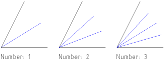

|
||
 |
||


Lines
Click the line button in the CAD toolbar to show the line toolbar (Figure 29).
{kind=link}
Figure 29: The line toolbar.
Sequence Of Lines
CAD Toolbar:
Menu:
Draw - Line - 2 Points
Command:
line
Options Toolbar:
Description:
This tool lets you draw a sequence of one or more straight lines.
Procedure:
- Specify the startpoint of the first line segment. You can use the mouse or enter a co-ordinate in the console.
- Specify the endpoint of the first line segment.
- Specify the endpoints of additional line segments. Type
corcloseor click the 'Close' button in the Options Toolbar to close the sequence. If you need to undo a single line segment, you can do so by enteringuorundoor clicking the 'Undo' button.
Line With Given Angle
CAD Toolbar:
Menu:
Draw - Line - Angle
Options Toolbar:
Description:
Use this tool to create lines with a given angle. The line will have to be trimmed to the desired length after creating it.
- Enter the angle and length of the line in the options toolbar. You
can also use the command line:
angle,angorato change the angle.length,lenorlto change the length. - Place the line with the mouse or by entering a co-ordinate in the command line.
Horizontal / Vertical Line
CAD Toolbar:
Menu:
Draw - Line - Horizontal / Vertical
Options Toolbar:

Description:
Use this tool to create horizontal (vertical) lines. This tool essentially behaves like the one described above, except that you cannot input an angle.
Rectangle
CAD Toolbar:
Menu:
Draw - Line - Rectangle
Command:
rec, rectang, rectangle
Description:
Use this tool to create rectangular shapes more quickly than with the line tool. A rectangle consists of four separate lines.
Procedure:
- Specify the first corner of the rectangle.
- Drag the mouse to the second corner and click to specify the second
corner of the rectangle. Alternatively you can enter the co-ordinate of
the second corner in the command prompt. E.g. to create a rectangle with
width 50 and height 25, enter
@50,25.
Parallel
CAD Toolbar:
Menu:
Draw - Line - Parallel
Command:
?
Options Toolbar:
Description:
With this tool you can create parallels to existing line, arc and circle entities.
Procedure:
- Enter the distance of the parallel from the original entity into the
options toolbar shown at the top or enter
distance,distordin the command line, followed by the distance. - Click the entity to which you want to create a parallel. The parallel is created on the side on which the mouse cursor is located while selecting the entity.
Bisector
CAD Toolbar:
Menu:
Draw - Line - Bisector
Command:
?
Options Toolbar:
Description:
Use this tool for creating angle bisectors between two line entities.
Procedure:
- In the options toolbar enter the length of the bisector(s), starting
from the intersection point of the two lines. In the second text box,
type the number of angle bisectors you want to create. The default is '1'
but you can also create multiple bisectors as shown in Figure
30. To specify the length in the command line, enter
length,lenorl, followed by the length. To specify the number of bisectors in the command line, enternumber,numorn, followed by the number. - Click the first line entity which defines the angle.
- Click the second line entity so that the preview shows the angle bisector(s) you want to create.

Figure 30: Construction of Bisectors.
Tangent From Point to Arc / Circle
CAD Toolbar:
Menu:
Draw - Line - Tangent (P,C)
Command:
?
Description:
Create tangents from a co-ordinate to an existing arc or circle entity with this tool.
Procedure:
- Use the mouse to specify the location of the startpoint of the line or enter a co-ordinate in the command line.
- Click the arc or circle entity to which you want to create the tangent. Usually, two tangents are possible. When moving the mouse around, you can see a preview of the tangent that will be created.
Tangent From Arc to Arc / Circle to Circle
CAD Toolbar:
Menu:
Draw - Line - Tangent (C,C)
Command:
?
Description:
Create tangents from one existing arc or circle entity to another one with this tool.
Procedure:
- Click the first arc or circle entity to which you want to create the tangent.
- Click the second arc or circle entity to which you want to create the tangent. Usually, four tangents are possible. When moving the mouse around, you can see a preview of the tangent that will be created.
Line Orthogonal to Another Entity
CAD Toolbar:
Menu:
Draw - Line - Orthogonal
Command:
?
Description:
This tool lets you create lines orthogonal to existing entities. The existing entity can be a line or an arc / circle.
Procedure:
- Click the existing entity.
- Place the line with the mouse or enter a co-ordinate in the command line.
Line with Relative Angle to Another Entity
CAD Toolbar:
Menu:
Draw - Line - Relative Angle
Command:
?
Description:
Create lines with a relative angle to existing entities with this tool. The existing entity can be a line or an arc / circle. Lines with a relative angle of 0 degrees to an arc are tangents.
Procedure:
- Enter the angle in the options toolbar.
- Click the existing entity.
- Place the line with the mouse or enter a co-ordinate in the command line.
Freehand Line
CAD Toolbar:
Menu:
Draw - Line - Freehand
Command:
?
Description:
With this tool you can draw freehand lines. Please use this tool sparingly since technical drawings usually require absolute accuracy. However, on some occasions this tool might come in handy (e.g. for broken edges like shown in Figure 31).
Procedure:
- Place the mouse at the startpoint of the freehand line, press the left mouse button and keep it down.
- Now move the mouse around to draw the line. At the endpoint of the freehand line, let go of the mouse button.
Figure 31: Example use for the freehand line tool.
Polygon with Center and Corner
CAD Toolbar:
Menu:
Draw - Line - Polygon (Cen,Cor)
Command:
?
Options Toolbar:
Description:
Creates polygons with the center and one corner given.
Procedure:
- Enter the degree of the polygon (number of edges / corners) in the options toolbar. Valid numbers range from 3 to 9999.
- Set the center of the polygon using the mouse or enter a co-ordinate in the command line.
- Set the first corner of the polygon.
Polygon with Two Corners
CAD Toolbar:
Menu:
Draw - Line - Polygon (Cor,Cor)
Command:
?
Options Toolbar:
Description:
Creates polygons with two corners given.
Procedure:
- Enter the degree of the polygon (number of edges / corners) in the options toolbar. Valid numbers range from 3 to 9999.
- Set the first corner of the polygon using the mouse or enter a co-ordinate in the command line.
- Set the second corner of the polygon.
|